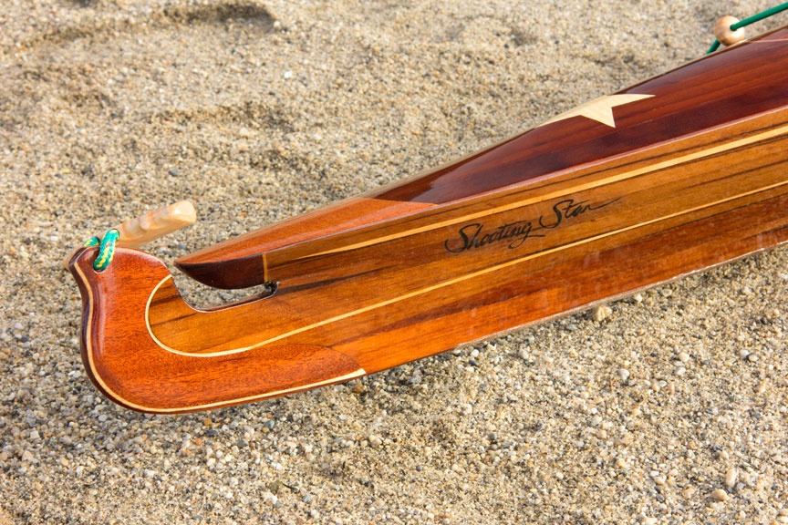

|
The Shooting Star pictured on this page was built in September / October 2014
for a two part WoodenBoat magazine article detailing the construction process. Part one of the article "A Strip Built Baidarka - Simple beauty in a complex and highly functional kayak" |
|||||||||
|  | |||||||||
|
Shooting Star© is a smaller, lower volume, baidarka from Laughing Loon. The dimensions are 16' 6" long and 21" wide, The finished weight is 35 pounds. The suggested weight range is from 100 to 200 pounds. It is nimble, responsive and fast. Detail photo of the Shooting Star's bifurcated bow above. Shooting Star is not a scaled down version of the North Star. The volume is lower, especially in the rear deck. The hull is slightly flattened to improve stability in such a narrow kayak. Though the Shooting Star is only 21" wide at the widest point at the sheer line, stability is good and secondary stability excellent. She is very responsive to paddle strokes yet tracks very well. Shooting Star will appeal to the paddler who wants a fast responsive day boat. With all the great speed, tracking and handling characteristics of the baidarka style. |
|||||||||
| The Shooting Star© is also a baidarka for the smaller paddler, with enough storage space for extended trips. It has the forward and stern volume typical of the baidarka style which gives the Shooting Star as much storage space as many larger length kayaks.
If you are 100 to 200 pounds the Shooting Star will be a good all round kayak for someone at the lower weight range or a good day boat for someone at the the higher end of that weight range. |
|||||||||
|
The Shooting Star shown here is built of western red cedar. The hardwood accents and veneers used on the deck, bow, toggle handles and cockpit are of curly maple and makore. The recessed fore and aft hatches are held in place with rare earth magnets. Neoprene gaskets on the hatches make them waterproof. The leading edge of the cockpit coaming is recessed. There are bulkheads in front of and behind the cockpit area to create the fore and aft watertight storage compartments. |
|||||||||
|
For current pricing for a finished Shooting Star follow this link.
Contact Laughing Loon for details. For building plans see kayak plans page |
|||||||||
 |
|||||||||
| Shooting Star and North Star were the fastest kayaks at the year 2000, Newfound Rendezvous on Lake Winnipesaukee, NH. Cruising speeds and sprinting speeds were measured by GPS by Peter Hunt owner/designer of Lil'dubber Boats. | |||||||||
 |
Shooting Star is 16" 6" long and 21" weight Finished weight is 32 pounds
For building plans see kayak plans page |
||||||||